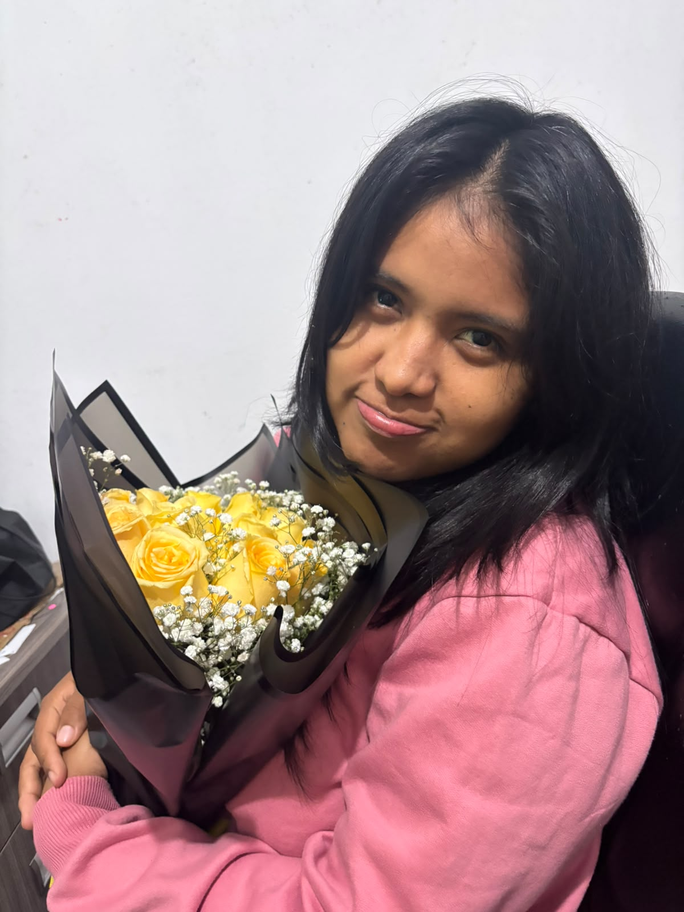
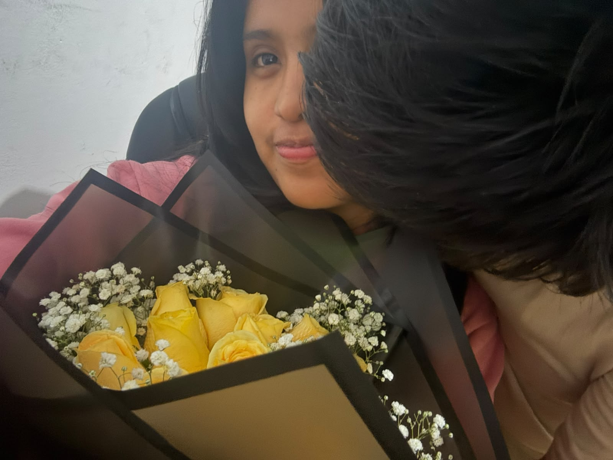
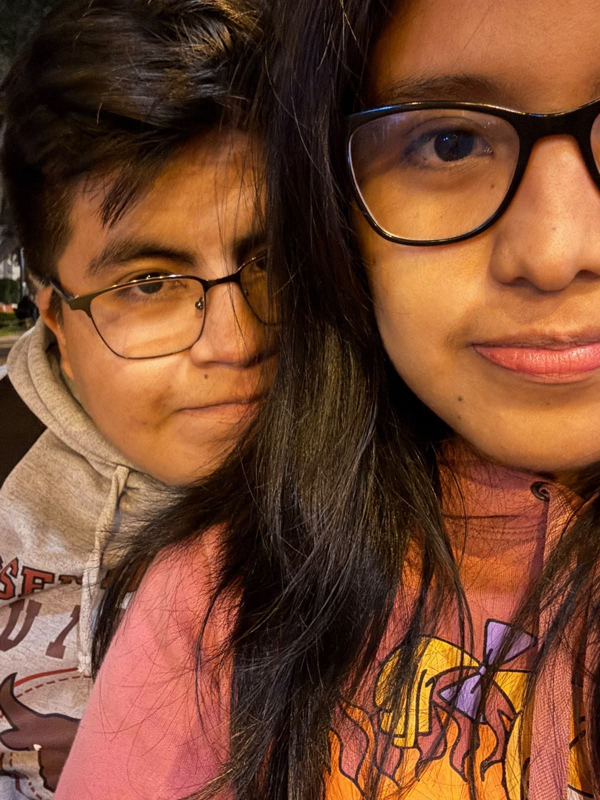
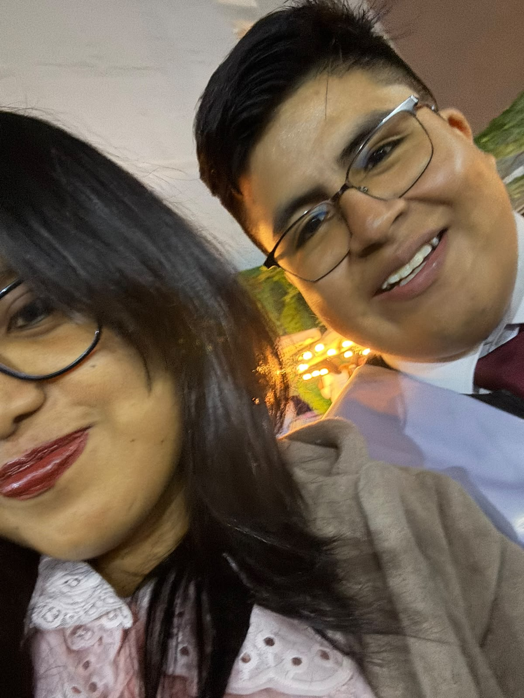
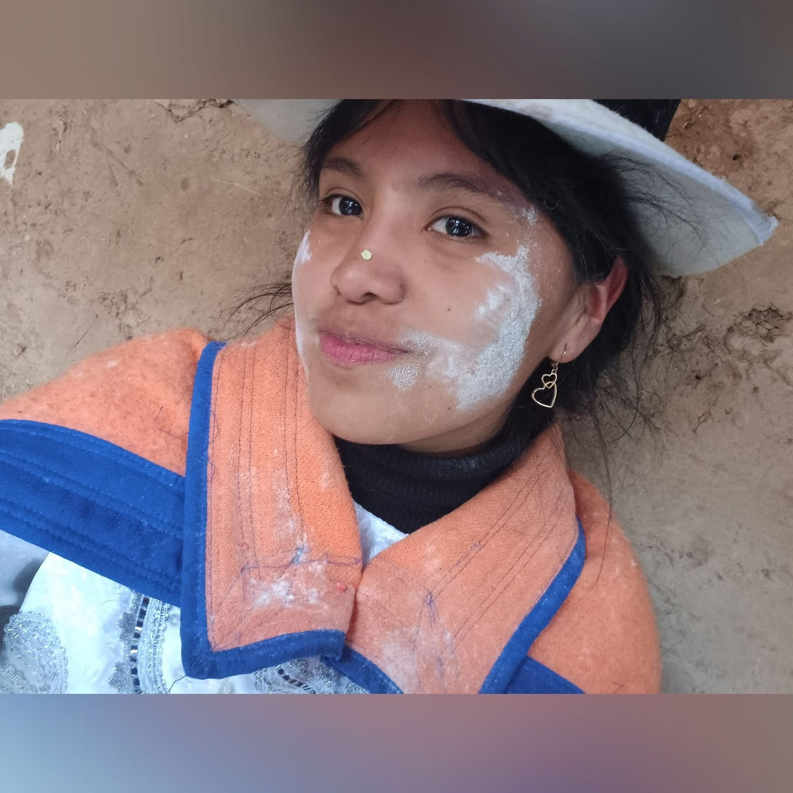

Inicio de nuestro recorrido
Mi Doc ❤️🩺
Un pequeño sistema para guardar nuestros tres meses.
Tiempo desde que empezó nuestra historia
0
días
0
horas
0
minutos
0
segundos
Daily message
HoyCargando mensaje...
Nuestro espacio
Nuestro dashboard
Desde el 30 de marzo de 2026, para mí dejó de ser una fecha normal y empezó a convertirse en el inicio de algo mucho más hermoso, más bonito y más especial de lo que imaginaba.
No todo lo bonito se puede medir, pero quería guardar en este espacio algunos detalles que significan mucho para mí.
Memory timeline
Nuestros recuerdos
No son todos los momentos que quiero vivir contigo, pero sí algunos de los que más guardo en mi corazón.

Desbloquéame con un beso
Tú con tus flores amarillas
Nunca antes había regalado flores a una persona, y tú fuiste mi primera inspiración para hacerlo. No te voy a negar que me sentí muy nervioso al dártelas, pero también muy feliz. Ese momento siempre va a ser importante para mí, porque me encanta verte sonreír, me encanta verte feliz, y en la medida de lo posible siempre voy a querer engreírte, cuidarte y darte detalles que alegren tu corazón.

Desbloquéame con dos besos
Los besos tuyos
Tú eres la persona que me da calma, paz y armonía. Contigo siento que puedo ser yo mismo, sin miedos, sin filtros y con el corazón tranquilo. Cada instante a tu lado tiene algo especial, y cada momento contigo se vuelve de los más hermosos que me ha dado la vida. Estar cerca de ti me hace sentir bien, me llena el corazón y me recuerda lo bonito que es coincidir con alguien así.

Desbloquéame con tres besos
Nuestro primer evento juntos
Este recuerdo me encanta porque fue hermoso compartir algo que nos agrada a los dos. Poder reírnos juntos, disfrutar algo que nos fascina y vivir ese momento lado a lado hizo que todo se sintiera aún más especial. Ese día, entre sonrisas, complicidad y pequeños detalles, siento que también nos ayudó a unirnos más y a seguir construyendo algo bonito entre nosotros.

Desbloquéame con cuatro besos
El día de mi graduación
Gracias por ser parte de los momentos más bonitos de mi vida, porque de alguna forma tú también eres uno de esos momentos. Verte presente en una etapa tan importante para mí, como lo es mi crecimiento profesional, hizo que ese día se volviera aún más valioso. Siempre te voy a agradecer por estar ahí, por permitirme verte ese día y por acompañarme, porque más allá de que fuera una fecha especial para mí, también fue un día en el que pude compartir contigo algo que significa mucho en mi vida.

Desbloquéame con cinco besos
Tú
Tú sabes cuánto amo esta imagen, porque fue uno de los primeros contactos visuales que tuve de ti después de que nos habíamos encontrado en el pueblito. Esta imagen refleja demasiado de lo que siento por ti. Creo que no hay otra imagen que haya visto tantas veces como esta, sobre todo en los días en los que no estamos juntos o en esos momentos en los que simplemente quiero verte y sentirte cerquita, aunque sea en una foto. Eres mi fortaleza, eres mi motor para seguir creciendo día a día, y muchas veces también eres esa calma que me ayuda cuando algo no va del todo bien.
Lo que viene
Se vienen más recuerdos contigo ❤️
Y si estos primeros meses ya me regalaron tantos momentos bonitos, no puedo dejar de ilusionarme con todo lo que todavía nos falta vivir, reír, abrazar, descubrir y recordar juntos.
Para abrir despacito
Hay una carta guardada para ti
No aparece de frente porque hay cosas bonitas que merecen abrirse con calma.
Carta privada
Para mi Doc ❤️
Mi Doc, no soy mucho de hacer manualidades, pero sí quería construirte algo que se parezca a mí: algo hecho con paciencia, con intención, con cariño y con mucho corazón.
Tal vez esta página no pueda explicar todo lo que siento, pero sí puede guardar una parte de lo bonito que han sido estos tres meses contigo. Desde el 30 de marzo de 2026, hay una fecha que se volvió especial para mí.
Gracias por estar, por acompañarme, por regalarme tranquilidad, por tus detalles, por tus ojos, por tu sonrisa y por hacer que incluso los días simples se sientan mucho más bonitos.
Si esta historia sigue escribiéndose, me hace feliz pensar que todavía se vienen más recuerdos, más salidas, más risas y más momentos contigo.
Felices tres meses, mi Doc ❤️
— Arturo
Un último detalle
Para que este recuerdo también exista fuera de la pantalla
Cuando esta web esté publicada, puedes convertir el enlace en un QR y ponerlo en una tarjetita pequeña.
QR
“Mi Doc ❤️, te construí algo. Escanéalo cuando estés tranquila.”